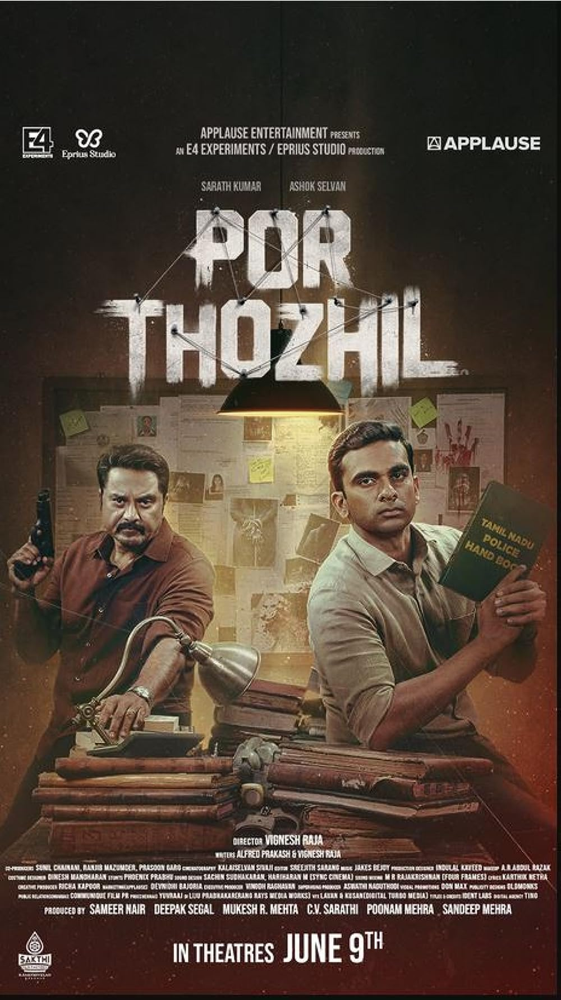

Por Thozhil Review: Cop Drama Winner

Rating:⭐⭐⭐⭐
An amazing cop drama that lives to its fullest. Every scene, every frame was absolutely beautiful. A huge win
in the books for Kollywood cinema for creating low budget interesting films that captivate the audience this year.
Ashok Selvan and Rummy Nayagan Sarathkumar, being the most iconic duo, of course. But huge shoutout, to Sarath Babu, for
his powerful, but yet creepy villainious performance in this film. Overall, a must-watch.